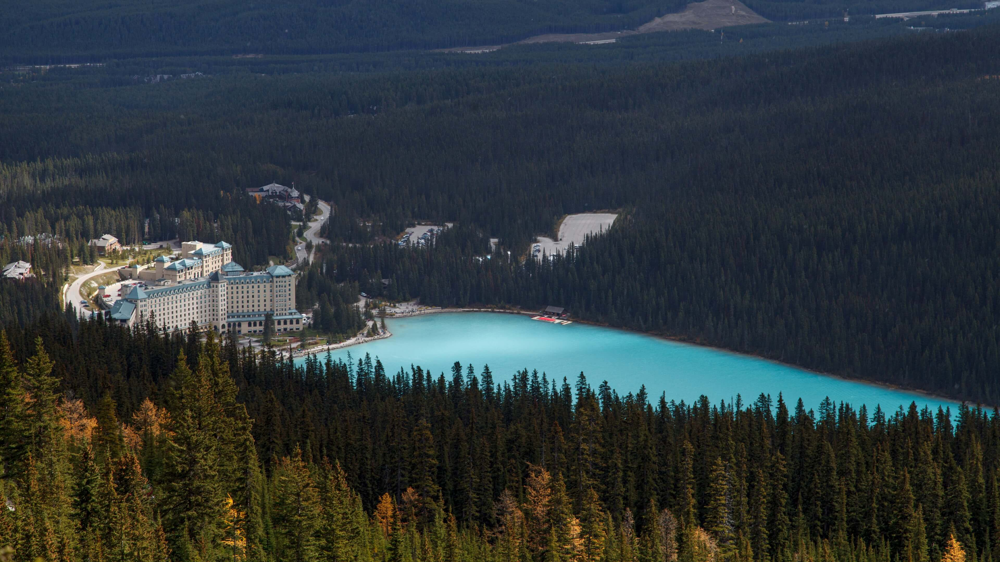
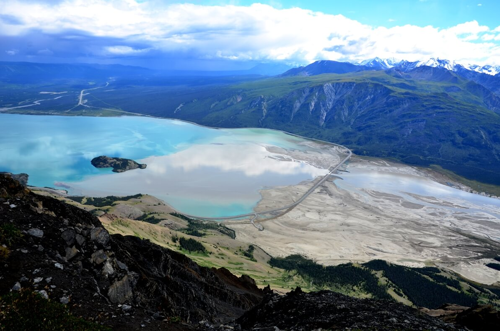
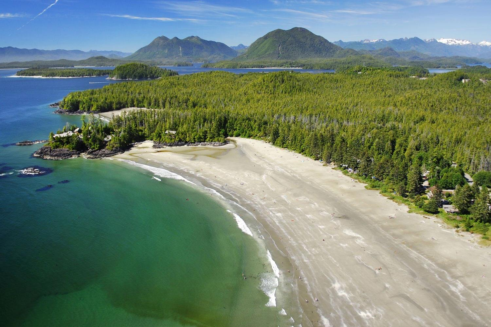
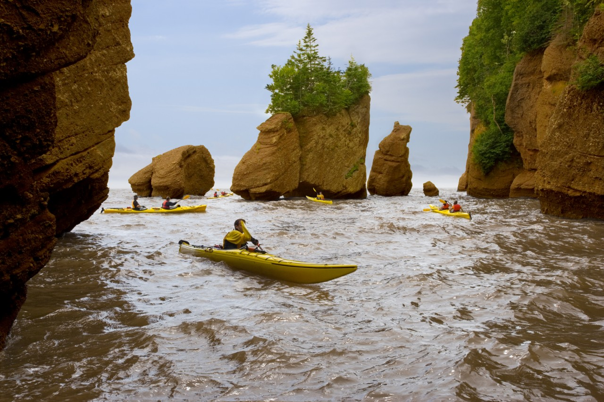
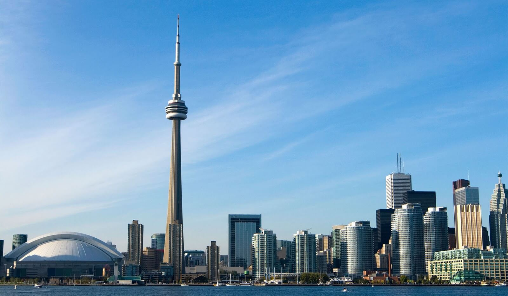

Канада
Кана́да — країна, що займає північну частину Північної Америки та майже половину площі континенту, простягаючись від Атлантичного океану на сході до Тихого океану на заході. Це друга за площею країна світу[2] (9 976 140 км²), що поступається лише Російській федерації. Канада межує зі Сполученими Штатами Америки на півдні та північному-заході та має морські кордони з Францією (острови Сен-П'єр і Мікелон) і Ґренландією (королівство Данія).
Banff and Lake Louise, Альберта
Розташована в межах величного парку Banff National Park, територія, що оточує ці два міста - справжнє диво в Скелястих Горах. Це місце з блакитними крижаними озерами, водоспадами, багатим тваринним світом (від лосів до баранів і ведмедів грізлі) і захоплюючою величчю. Зупиніться в Banff, в обласному центрі з класичними готелями, або насолодитеся самотою біля Lake Louise, де панує зачаровуюча тиша і рукою подати до пішохідних маршрутів в гори.
Kluane National Park, Юкон
Цей гігантський національний парк, де розташована найвища точка Канади (Mount Logan, висота 19,551 футів), є в західному Юконі. На його території в 22,000 квадратних кілометрів є блакитні льодовики, пишні долини і незаймані простори. Цю красу можна побачити з висоти пташиного польоту на борту вертольота або літака, обладнаного лижами (які дозволяють здійснювати високогірні посадки на сніг). Або, навіть краще, катайтеся на лижах, використовуючи велику паркову мережа трас, де ви могли б ходити цілими днями, не зустрівши жодної живої душі.
Long Beach, Tofino, Британська Колумбія
Названий «кращим містом для серфінгу в Північній Америці» журналом Outside, Тофино - це красиве пляжне місто, яке знаходиться на дикому західному узбережжі острова Ванкувер, ідеальне для серфінгу і вечірніх душевних прогулянок для любителів природи. Розташоване прямо на півдні міста, Long Beach - це найзагадковіше місце; широкий і дуже довгий пляж з прекрасними хвилями і чарівною красою.
Скелясті гори Канади

Скелясті гори Канади є північною частиною Кордильєр і розташовані на території Юкон. На
південь гірська система тягнеться до штату Нью-Мексико (США) і включає в себе сотню хребтів,
розділених глибокими долинами і великими улоговинами. Загалом тут переважає сухий прохолодний
клімат, тим не менш, в горах виразно відображена і широтна зональність, і висотна поясність:
засніжені вершини, тайга, листопадні ліси, навіть зони напівпустелі.
Для Скелястих гір дуже характерні великі красиві озера. Парк Банф відомий як одне з найкрасивіших місць на
Землі. Тут, на Східних схилах гір, розкинулося озеро Морейн. Це льодовикове озеро, в червні найбільш
повноводе, оскільки воно залежить від танення льодів. Незвичайно мальовнича особливість озера -
бірюзовий колір озерної води, вразив його першовідкривача У. Уілкокса. Колір обумовлений наявністю
у воді мікрочастинок, що відбивають синій колір і потрапляють у воду з талого льоду. Східна сторона
озера оточена прямовисними скелями гори Венкчемна.
Скелясті гори Канади - батьківщина сотень найкрасивіших озер і річок, які оточені унікальним
ландшафтом. Красою стародавніх озер можна насолодитися безпосередньо, зробивши водну прогулянку
на каное або каяку, які легко орендувати. Навіть влітку для подібної прогулянки слід запастися
теплим одягом, оскільки холодне повітря з гір може бути дуже відчутним. Сплав на байдарках -
більш екстремальний вид водного туризму, але не менш популярний в Канаді. Схили Скелястих гір
помережані річковими руслами бурхливих і спокійних річок. Тихі ріки також підходять для плавання з
дітьми та підлітками.
Bay of Fundy, Нью-Брансвік
Останнім часом це місце - серйозний претендент в змаганні за право назватися новим сьомим дивом природи. Припливи і відливи в цій великій затоці, яка відокремлює Нью-Браунсвік від Нової Ськотії, - це справжнє видовище. У деяких місцях вода тут піднімається і опускається більш ніж на 50 футів. Найкраще це видно в такому місці, як Hopewell Rocks. Це унікальні кам'яні формування, які під час відливу формують вежі на суші, але перетворюються в острови, коли вода піднімається.
CN Tower, Торонто
Сі-Ен-Тауер — оглядова і телекомунікаційна вежа висотою 553,3 метра у центрі міста Торонто, провінція Онтаріо, Канада. Вежа була найвищою будівлею планети впродовж 31 року від 1976 до 2007, перевершивши висоту Останкінської телевежі, та 12 вересня 2007 року поступившись хмарочосу Бурдж Халіфа. Сі-Ен Тауер залишається найвищою будівлею Західної півкулі. Вежа є визначальною будівлею панорами Торонто, та є одним із найупізнаваніших символів Канади. Щорічно її відвідують більше двох мільйонів туристів.
Корисні посилання
- Іспанія
- Франція
- Канада
- Австралія
- Бразилія
- Аргентина
- Італія
- Індія
- ПАР
- Індонезія